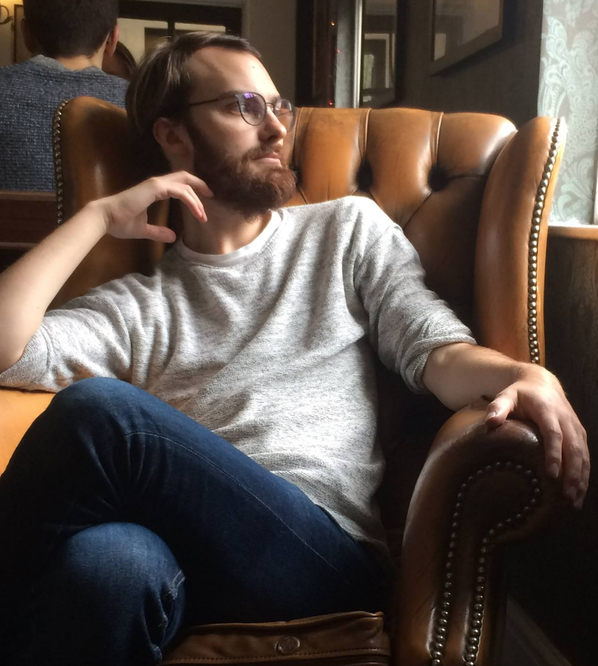

Postdoctoral fellow at the MPIM Bonn

I am a Postdoctoral Fellow at the Max Planck Institute of Mathematics in Bonn, mainly interested in all things related to tensor-triangulated geometry and Quillen model categories. My mentor is Tobias Barthel.
I completed my Ph.D. at the University of Leicester in 2017 under the supervision of Frank Neumann. Following this I was a postdoc at the University of Sheffield and the University of Warwick with John Greenlees working on the project Adelic models, rigidity and equivariant cohomology.
email: balchin@mpim-bonn.mpg.de